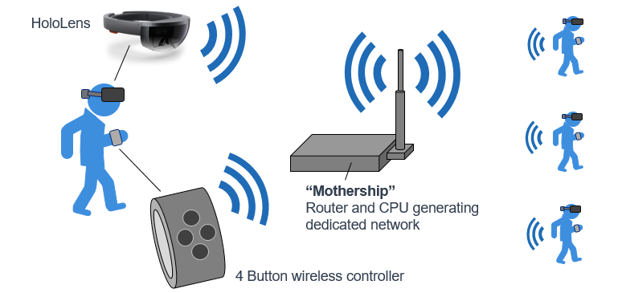

In August 2018 I received $50k in funding for a proposal to develop a system that would allow tactical team members to maintain virtual line of sight with one another in indoor environments using augmented reality. We used the Unity Game Engine to build an application for Microsoft's HoloLens that would display 3D representations of teammate locations indoors. We developed peripheral hardware that performed indoor node localization with RF as well as collected data about individual motion (dead reckoning) to allow a fusion of location information to improve traking accuracy indoors.
Results from this work were presented in January 2021 at the APL XR Symposium. This video shows talks from day 1 of the symposium. My talk is first and describes the project in greater detail.
A variety of tools and conditions (GPS, line of sight, long range communication, etc.) make it easy for tactical teams (soldiers, police, firefighters, EMTs, etc.) to coordinate their positions in outdoor environments. Indoors, many of these resources are absent or severely degraded. As a consequence, indoor tactical teams are fundamentally blind to each other's locations. This blindness creates risks to the team and their mission, risks that would decrease substantially if teams could see through walls and obstacles. For instance:
- Would friendly fire be less likely if you could see your teammate through the wall before they emerged?
- Would seeing a non-responsive teammate's location through floors allow more effective evacuation?
Microsoft's HoloLens is an AR headset that performs simultaneous localization and mapping (SLAM) which allows it to track its position and orientation in an indoor environment over time. With some additional data processing and sensor fusion (see "Node Localization in an Obstacle Rich Environment" in Literature for more details on this) the HoloLens can maintain good position estimation for several minutes across multiple floors and through multiple rooms. This capability, fused with intuitive peripheral controls and a holographic UI, create what we call "virtual line of sight," or the ability for team members to see holographic representations of their teammates in the correct directions in space. We also explored additional features that went beyond mere line of sight. For more details, watch the symposium presentation above!
